전기철도기사 (2004-03-07 기출문제)
1과목: 전기철도공학
1. 조가선과 전차선의 2조로 구성되고 조가선으로 전차선을 궤도면에 대하여 평행이 되도록 한 방식은?
- 심플 커티너리 조가방식
- 헤비 심플 커티너리 조가방식
- 콤파운드 커티너리 조가방식
- 합성 콤파운드 커티너리 조가방식
(정답률: 알수없음)

2. 가공전차선로에서 두 개의 금속의 조합 즉, 피접촉금속과 접촉금속의 사용이 불가능 한 조합은?
- 알루미늄-카드뮴
- 알루미늄-동
- 알루미늄-아연
- 알루미늄-크롬
(정답률: 알수없음)
3. 가공 전차선로에서 이종 금속의 접촉 부식의 요인이 아닌것은?
- 부식환경의 영향
- 곡선반경의 영향
- 기온의 영향
- 분진의 부착 영향
(정답률: 알수없음)
4. 실리콘 정류기의 출력전압을 1500V로 하려면 정류기 1차측 교류전압을 약 몇 V 로 하면 좋은가?(단, 교류와 직류의 전압비는 1.35 이다.)
- 1010
- 1110
- 1500
- 2030
(정답률: 알수없음)
5. 직류 전차선로에서 귀선로의 전기저항이 높아 전압강하 및 레일 전위의 상승을 억제하기 위해 설치하는 것은?
- 흡상선
- 보조귀선
- 인입귀선
- 중성선
(정답률: 알수없음)
6. 전차선로의 구분장치의 설치개소 중 잘못된 것은?
- 상, 하선별 또는 방면별 구분
- 큰 역구내, 차량기지 구분
- 보수작업구간의 설정이 쉽도록 구분
- 본선로상에서는 적당히 구분
(정답률: 알수없음)
7. 지상구간 커티너리 가선방식 전차선로에서 일반 개소(역간)의 전주 표준 건식 게이지는?
- 2.1m
- 3m
- 3.5m
- 4m
(정답률: 알수없음)
8. 자동신호에 사용하는 궤도 변압기에서 고저압 혼촉방지 장치는?
- 금속성 이격판
- 방전 간격
- 피뢰기
- 저압측 1단 접지
(정답률: 알수없음)
9. 부담률을 산출하는 식은?
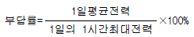
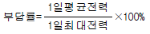
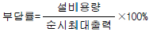
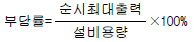
(정답률: 알수없음)
10. 전기차의 동력 집중방식의 장점이 아닌 것은?
- 구동 전동기 수가 작기 때문에 고장 발생률이 비교적 적다.
- 객차에 구동 전동기가 없기 때문에 진동, 소음이 적고, 승차감이 양호하다.
- 여객과 화물수송의 병행운용이 가능하여 전기차 운용 효율이 향상된다.
- 속도 급상승, 급제동이 용이하고 축중이 가볍고, 선로의 제한속도를 높일 수 있다.
(정답률: 알수없음)
11. 조가선에 만곡하중이 걸리는 곳은?
- 지지점
- 전주 경간의 중심점
- 행거 상단점
- 드로퍼 상단점
(정답률: 알수없음)
12. 전차선로에서 본선에 가장 많이 사용되는 장력조정 장치는?
- 스프링식
- 활차식
- 턴버클식
- 조정스트랩
(정답률: 알수없음)
13. 우리나라 전기철도의 급전방식에서 사용하고 있는 전차선과 레일간의 표준전압은?
- 직류: 750V, 교류: 15kV
- 직류: 750V, 교류: 20kV
- 직류: 1500V, 교류: 25kV
- 직류: 1500V, 교류: 50kV
(정답률: 알수없음)
14. 전기철도의 급전방식 중 직류 급전방식의 장점은?
- 운전전류가 작아 누설전류에 의한 전식(電蝕)대책이 필요 없다.
- 전압이 낮아 절연계급을 낮출 수 있고 통신유도장애가 없다.
- 사고시 선택차단이 용이하다.
- 대용량 중·장거리 수송에 유리하다.
(정답률: 알수없음)
15. 전차선의 활차식 자동장력조정장치(WTB)의 조정거리 L을 구하는 식은? (단, C: 전차선의 선팽창 계수, △t: 표준온도에 대한 온도변화, X: 전차선의 신장길이이다.)
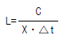
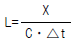
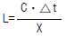
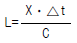
(정답률: 알수없음)
16. 전기적인 전차선로의 구분장치가 아닌 것은?
- 에어섹션
- 에어조인트
- 데드섹션
- 애자형 섹션
(정답률: 알수없음)
17. 두 금속의 상대 전위차로부터 알 수 있는 것은?
- 부하의 정도
- 부식의 정도
- 전류의 정도
- 저항의 정도
(정답률: 알수없음)
18. 교류 T-Bar방식 전차선로에서 강체 전차선의 기본 구성요소가 아닌 것은?
- 연결 금구
- 전차선
- 리지드바
- 절연매립전
(정답률: 알수없음)
19. 강체 전차선의 구성 요소가 아닌 것은?
- T형제
- 절연매립전
- 애자
- 조가선
(정답률: 알수없음)
20. 전차선의 이선시간이 수십분의 일초 정도의 것으로 전차선 또는 팬터그래프 습판의 미세한 진동에 따른 이선을 무엇이라 하는가?(오류 신고가 접수된 문제입니다. 반드시 정답과 해설을 확인하시기 바랍니다.)
- 대이선
- 중이선
- 소이선
- 이선율
(정답률: 알수없음)
2과목: 전기철도 구조물공학
21. 정적인 상태에서 가선측정기에 의한 곡선구간의 측정은 어느 궤도를 기준으로 하는가?
- 내측 궤도
- 외측 궤도
- 선로 중심
- 내측의 1/3 지점
(정답률: 알수없음)
22. 볼트의 유효 직경을 1.6cm, 허용전단응력을 1200kgf/cm2로 할 때, 이 볼트 한 개의 허용 전단력은 약 몇 kgf인가?
- 1254
- 1813
- 1956
- 2412
(정답률: 알수없음)
23. 구조물의 분류 중 1차원 구조물에 해당되지 않는 것은?
- 봉(rod)
- 기둥(column)
- 샤프트(shaft)
- 플레이트(plate)
(정답률: 알수없음)
24. 프리텐션 콘크리트 전주의 호칭이 10-35-N6500 이다. 여기에서 6500은 무엇을 의미하는가?
- 허용 경간
- 설계 굽힘 모멘트
- 전주 말구의 지름
- 전주 하중점의 높이
(정답률: 알수없음)
25. 우리나라에서 전차선로를 설계할 때, 병종풍압하중은 최저온도를 적용한다. 이 때 최저온도의 기준은 몇 ℃인가?
- -10
- -15
- -20
- -25
(정답률: 알수없음)
26. 가공 전차선로의 곡선로에서 전선의 장력에 따라 지지점에서 곡선 안쪽으로 발생되는 힘은?
- 인장력
- 하중
- 수직력
- 수평장력
(정답률: 알수없음)
27. 전단응력에 대한 설명이 옳은 것은?
- 부재축의 직각방향의 전단력에 의해서 생기는 응력
- 부재가 인장력을 받을 때 생기는 응력
- 부재가 회전모멘트를 받을 때의 응력
- 부재가 압축력을 받을 때 생기는 응력
(정답률: 알수없음)
28. 전기철도에 사용되는 구조물의 종류 중 "평행틀"의 설명으로 옳은 것은?
- 전철주와 조립하여 전차선과 급전선 등을 지지하기 위한 강구조물을 말한다.
- 전주 또는 고정빔 등에 취부하여 급전선, 부급전선, 보호선 등을 지지 또는 인류하기 위한 구조물을 말한다.
- 전주의 건식이 곤란한 개소에서 고정빔이나 터널의 천정에서 아래로 가동브래킷, 곡선당김장치 등을 지지하기 위한 지지물을 말한다.
- 전차선 평행개소 등에서 1본의 전주에 2개의 가동 브래킷을 지지하기 위한 구조물을 말한다.
(정답률: 알수없음)
29. 슬리트 점프현상을 설명한 것 중 옳은 것은?
- 전선에 착빙이 되면 중량에 의해 전선이 아래로 처진다. 이 상태에서 기온이 상승하면 빙설이 탈락되면서 전선이 상,하운동을 하게 되는데 이 현상을 말한다.
- 전선에 착빙이 되면 중량에 의해 전선이 아래로 처진다. 이 상태에서 기온이 상승하면 빙설이 탈락되면서 전선이 수평운동을 하게 되는데 이 현상을 말한다.
- 전선에 착빙이 되면 온도에 의해 전선이 아래로 처진다. 이 상태에서 기온이 상승하면 빙설이 탈락되면서 전선이 수직운동을 하게 되는데 이 현상을 말한다.
- 전선에 착빙이 되면 온도에 의해 전선이 아래로 처진다. 이 상태에서 기온이 상승하면 빙설이 탈락되는 현상을 말한다.
(정답률: 알수없음)
30. 최대장력이 1970kgf인 급전선의 인류용 단지선에 작용하는 장력은 약 몇 kgf 인가?(단, 지선과 전주의 각도는 45° 이다.)(오류 신고가 접수된 문제입니다. 반드시 정답과 해설을 확인하시기 바랍니다.)
- 577
- 697
- 1393
- 2786
(정답률: 알수없음)
31. 스팬선식, 보통빔식, 브래킷식 등에서 사용하며, 수평 하중에 대하여 충분한 강도를 가지고 있는 전주는?
- A형
- B형
- C형
- D형
(정답률: 알수없음)
32. 지표면에서 높이가 11m인 단독 지지주에 28㎏f/m의 수평 분포하중이 작용하는 경우 3.5m 지지점에서의 모멘트 Mh는 몇 ㎏f·m 인가?
- 687.5
- 722.5
- 787.5
- 822.5
(정답률: 알수없음)
33. 그림과 같은 트러스빔에서 A에 해당되는 것은?
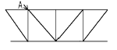
- 지점
- 절점
- 경사재
- 입속
(정답률: 알수없음)
34. 반지름이 r 인 반원의 1차 모멘트는?
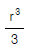
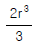
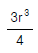
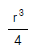
(정답률: 알수없음)
35. 구조물 또는 물체에 여러개의 힘이 작용하여 정지상태가 되는 힘의 평행에 대한 필요조건으로 옳지 않은 것은?
- 모멘트의 대수합은 0 이다.
- 수평분력의 대수합은 0 이다.
- 수직분력의 대수합은 0 이다.
- 모멘트의 대수합은 우력이 있는 경우에는 양수(+의 수)이다.
(정답률: 알수없음)
36. 커티너리구간의 전기철도 구조물에 사용하는 단독 지지주의 설계하중으로 고려하여야 할 사항으로 거리가 가장 먼것은?
- 전선의 풍압하중
- 전선의 인장강도
- 가동브래킷의 중량
- 가선 전선의 횡장력
(정답률: 알수없음)
37. 전차선로에서 2본 이상의 빔, 철주 등이 연속 설치된 구간에 설치하는 보호설비는?
- 보호선
- 부급전선
- 가공지선
- 섬락보호지선
(정답률: 알수없음)
38. 전철주 중 철주에 대한 설명이다. 옳지 않은 것은?
- 전주의 길이에 제약이 없다.
- 소요 강도는 자유롭게 설계가 가능하다.
- 특수한 형상을 제작하기 곤란하다.
- 내구성이 비교적 높다.
(정답률: 알수없음)
39. 가동 브래킷의 장점에 대한 설명으로 옳은 것은?
- 복잡한 역구내의 선로에 사용하기 쉽다.
- 경량이고 가선상태가 양호하여 고속도 운전에 적합한 구조를 가지고 있다.
- 회전구조로 되어 있어서 전차선의 경점을 크게 한다.
- 전차선의 허용 편위를 절대로 초과하지 않는 구조를 지니고 있다.
(정답률: 알수없음)
40. 경사재의 설치 방법을 결정하는 사항이 아닌 것은?
- 세장비의 제한
- 발생 응력의 크기
- 주재와의 접합부에 작용하는 하중의 크기
- 인장력의 크기
(정답률: 알수없음)
3과목: 전기자기학
41. 임의의 단면을 가진 2개의 원주상의 무한히 긴 평행도체가 있다. 지금 도체의 도전률을 무한대라고 하면 C, L, ε 및 μ사이의 관계는? (단, C는 두 도체간의 단위길이당 정전용량, L은 두 도체를 한개의 왕복회로로 한 경우의 단위길이당 자기인덕턴스, ε은 두 도체사이에 있는 매질의 유전률, μ는 두 도체사이에 있는 매질의 투자율이다.)
- Cε= Lμ
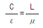
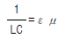
- LC =εμ
(정답률: 알수없음)
42. 30V/m의 전계내 50V 되는 점에서 1C 의 전하를 전계 방향으로 70㎝ 이동한 경우, 그 점의 전위는 몇 V 인가?
- 21
- 29
- 35
- 65
(정답률: 알수없음)
43. Ω·sec와 같은 단위는?
- H
- H/m
- F
- F/m
(정답률: 알수없음)
44. 전류가 흐르는 도선을 자계안에 놓으면, 이 도선에 힘이 작용한다. 평등자계의 진공 중에 놓여 있는 직선 전류 도선이 받는 힘에 대하여 옳은 것은?
- 전류의 세기에 반비례한다.
- 도선의 길이에 비례한다.
- 자계의 세기에 반비례한다.
- 전류와 자계의 방향이 이루는 각의 탄젠트 각에 비례한다.
(정답률: 알수없음)
45. 다음 중 옳은 것은?
- grad V 는 전계방향으로 향하는 전위의 변화율이다.
- curl curl H = grad div H - ∇2 H 의 벡터 항등식은 멕스웰 전자 방정식을 이용하여 전신 방정식(telegraphic equation)을 유도하는데 필요하다.
- div E 는 폐곡면의 단위 면적당의 전기력선의 발산량이다.
- curl H (=∇×H )는 rot H 와 같은 것이며 자계내의 1 Wb가 이동하여 만든 폐로면내 단위 길이당의 선적 분이다.
(정답률: 알수없음)
46. 매질 1 이 나일론 (비유전율 εs = 4)이고, 매질 2가 진공일 때 전속밀도 D가 경계면에서 각각 θ1, θ2 의 각을 이룰 때 θ2=30° 라 하면 θ1의 값은?
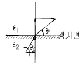
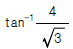
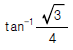
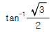
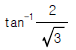
(정답률: 알수없음)
47. 무한장 솔레노이드에 전류가 흐를 때 발생되는 자장에 관한 설명 중 옳은 것은?
- 내부 자장은 평등자장이다.
- 외부와 내부의 자장의 세기는 같다.
- 외부 자장은 평등자장이다.
- 내부 자장의 세기는 0 이다.
(정답률: 알수없음)
48. 정전용량이 1μF인 공기콘덴서가 있다. 이 콘덴서 판간의 1/2인 두께를 갖고 비유전률 εr=2인 유전체를 그 콘덴서의 한 전극면에 접촉하여 넣었을 때 전체의 정전용량은 몇 μF 가 되는가?
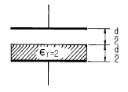
- 2
- 1/2
- 4/3
- 5/3
(정답률: 알수없음)
49. 자계분포 H=xy j-xz k[A/m]를 발생시키는 점(1,1,1)[m] 에서의 전류밀도는 몇 A/m2 인가?
- 2
- 3
- √2
- √3
(정답률: 알수없음)
50. 균일한 자속 밀도 B 중에 자기 모멘트 m 의 자석(관성 모멘트 I)이 있다. 이 자석을 미소 진동 시켰을 때의 주기는 얼마인가?
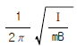
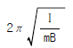
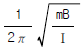
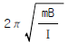
(정답률: 알수없음)
51. 유전율이 다른 두 유전체의 경계면에 작용하는 힘은? (단, 유전체의 경계면과 전계방향은 수직이다.)
- 유전율의 차이에 비례
- 유전율의 차이에 반비례
- 경계면의 전계의 세기의 제곱에 비례
- 경계면의 전하밀도의 제곱에 비례
(정답률: 알수없음)
52. 전력용 유입 커패시터가 있다. 유(기름)의 비유전률이 2 이고 인가된 전계 E =200sinωt ax[V/m]일 때 커패시터 내부에서의 변위 전류밀도는 몇 A/m2 인가?
- 400ω cosωt ax
- 400 sinωt ax
- 200ω cosωt ax
- 400ω sinωt ax
(정답률: 알수없음)
53. 한변의 저항이 Ro인 그림과 같은 무한히 긴 회로에서 AB간의 합성저항은 어떻게 되는가?
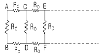
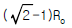
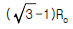
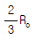
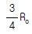
(정답률: 알수없음)
54. 미분방정식 형태로 나타낸 멕스웰의 전자계 기초 방정식은?
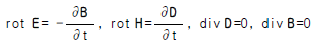
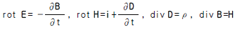
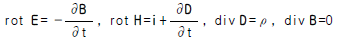
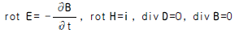
(정답률: 알수없음)
55. 패러데이 관(Faraday 管)에 대한 설명 중 틀린 것은?
- 패러데이관내의 전속선 수는 일정하다.
- 진전하가 없는 점에서는 패러데이관은 불연속적이다.
- 패러데이관의 밀도는 전속밀도와 같다.
- 패러데이관 양단에 정(正), 부(負)의 단위 전하가 있다.
(정답률: 알수없음)
56. 자속밀도가 0.3Wb/m2인 평등자계내에 5A의 전류가 흐르고 있는 길이 2m인 직선도체를 자계의 방향에 대하여 60도의 각도로 놓았을 때 이 도체가 받는 힘은 약 몇 N 인가?
- 1.3
- 2.6
- 4.7
- 5.2
(정답률: 알수없음)
57. 액체 유전체를 포함한 콘덴서 용량이 C[F]인 것에 V[V]의 전압을 가했을 경우에 흐르는 누설전류는 몇 A 인가?(단, 유전체의 비유전률은 εs이며, 고유저항은 ρ[Ω.m]라 한다.)
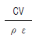
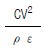
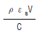
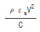
(정답률: 알수없음)
58. 정전계내에 있는 도체 표면에서의 전계의 방향은 어떻게 되는가?
- 임의 방향
- 표면과 접선방향
- 표면과 45도 방향
- 표면과 수직방향
(정답률: 알수없음)
59. 비투자율이 500인 철심을 이용한 환상 솔레노이드에서 철심속의 자계의 세기가 200A/m일 때 철심속의 자속밀도 B[T]와 자화율 X[H/m]는 약 얼마인가?
- B=π×10-2, X=3.2×10-4
- B=π×10-2, X=6.3×10-4
- B=4π×10-2, X=6.3×10-4
- B=4π×10-2, X=12.6×10-4
(정답률: 알수없음)
60. 환상 철심에 권수 NA인 A코일과 권수 NB인 B코일이 있을 때 코일 A의 자기인덕턴스가 LA[H]라면 두 코일간의 상호인덕턴스는 몇 H 인가?(단, A코일과 B코일간의 누설자속은 없는 것으로 한다.)
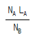
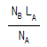
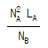
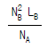
(정답률: 알수없음)
4과목: 전력공학
61. 초고압용 차단기에서 개폐저항기를 사용하는 이유는?
- 개폐써지 이상전압 억제
- 차단전류 감소
- 차단속도 증진
- 차단전류의 역률 개선
(정답률: 알수없음)
62. 직접접지방식이 초고압 송전선에 채용되는 이유 중 가장 적당한 것은?
- 지락고장시 병행 통신선에 유기되는 유도전압이 작기 때문에
- 지락시의 지락전류가 적으므로
- 계통의 절연을 낮게 할 수 있으므로
- 송전선의 안정도가 높으므로
(정답률: 알수없음)
63. 그림과 같은 회로에서 4단자 정수 A , B , C , D 는?(단, Es, Ｉs는 송전단 전압, 전류이고, ER, ＩR는 수전단 전압, 전류, Y는 병렬 어드미턴스이다.)
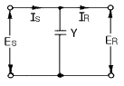
- A =1, B =0, C =Y, D =1
- A =1, B =Y, C =0, D =1
- A =1, B =Y, C =1, D =0
- A =1, B =0, C =0, D =1
(정답률: 알수없음)
64. 부하역률이 cosθ인 경우의 배전선로의 전력손실은 같은 크기의 부하전력으로 역률이 1 인 경우의 전력 손실에 비하여 몇 배인가?
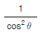
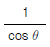
- cosθ
- cos2θ
(정답률: 알수없음)
65. 주상변압기의 2차측 접지공사는 어느 것에 의한 보호를 목적으로 하는가?
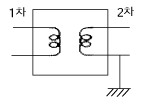
- 2차측 단락
- 1차측 접지
- 2차측 접지
- 1차측과 2차측의 혼촉
(정답률: 알수없음)
66. 가공송전선로를 가선할 때에는 하중조건과 온도조건을 고려하여 적당한 이도(dip)를 주도록 하여야 한다. 다음 중 이도에 대한 설명으로 옳은 것은?
- 이도가 작으면 전선이 좌우로 크게 흔들려서 다른 상의 전선에 접촉하여 위험하게 된다.
- 전선을 가선할 때 전선을 팽팽하게 가선하는 것을 이도를 크게 준다고 한다.
- 이도를 작게 하면 이에 비례하여 전선의 장력이 증가되며, 너무 작으면 전선 상호간이 꼬이게 된다.
- 이도의 대소는 지지물의 높이를 좌우한다.
(정답률: 알수없음)
67. 송배전 선로에서 도체의 굵기는 같게 하고 경간을 크게 하면 도체의 인덕턴스는?
- 커진다.
- 작아진다.
- 변함이 없다.
- 도체의 굵기 및 경간과는 무관하다.
(정답률: 알수없음)
68. 저압 뱅킹방식의 장점이 아닌 것은?
- 전압강하 및 전력손실이 경감된다.
- 변압기 용량 및 저압선 동량이 절감된다.
- 부하 변동에 대한 탄력성이 좋다.
- 경부하시의 변압기 이용 효율이 좋다.
(정답률: 알수없음)
69. 가스터빈 발전의 장점은?
- 효율이 가장 높은 발전방식이다.
- 기동시간이 짧아 첨두부하용으로 사용하기 용이하다.
- 어떤 종류의 가스라도 연료로 사용이 가능하다.
- 장기간 운전해도 고장이 적으며, 발전효율이 높다.
(정답률: 알수없음)
70. 3본의 송전선에 동상의 전류가 흘렀을 경우 이 전류를 무슨 전류라 하는가?
- 영상전류
- 평형전류
- 단락전류
- 대칭전류
(정답률: 알수없음)
71. 동일한 조건하에서 3상 4선식 배전선로의 총 소요전선량은 3상 3선식의 것에 비해 몇 배정도로 되는가? (단, 중성선의 굵기는 전력선의 굵기와 같다고 한다.)
- 1/3
- 3/4
- 3/8
- 4/9
(정답률: 알수없음)
72. 변전소에서 비접지 선로의 접지보호용으로 사용되는 계전기에 영상전류를 공급하는 것은?
- CT
- GPT
- ZCT
- PT
(정답률: 알수없음)
73. 어떤 선로의 양단에 같은 용량의 소호리액터를 설치한 3상 1회선 송전선로에서 전원측으로부터 선로길이의 1/4지점에 1선지락고장이 발생했다면 영상전류의 분포는 대략 어떠한가?
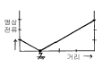
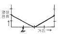
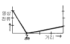
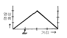
(정답률: 알수없음)
74. 피뢰기의 제한전압이 728kV이고 변압기의 기준충격절연 강도가 1040kV 라고 하면 보호 여유도는 약 몇 % 정도 되는가?
- 31
- 38
- 43
- 47
(정답률: 알수없음)
75. 설비 A가 150kW, B가 350kW, 수용률이 각각 0.6 및 0.7일 때 합성최대전력이 279kW이면 부등률은?
- 1.1
- 1.2
- 1.3
- 1.4
(정답률: 알수없음)
76. 정전압 송전방식에서 전력원선도를 그리려면 무엇이 주어져야 하는가?
- 송수전단 전압, 선로의 일반회로 정수
- 송수전단 역률, 선로의 일반회로 정수
- 조상기 용량, 수전단 전압
- 송전단 전압, 수전단 전류
(정답률: 알수없음)
77. 포오밍(foaming)의 원인은?
- 과열기의 손상
- 냉각수의 불순물
- 급수의 불순물
- 기압의 과대
(정답률: 알수없음)
78. 케이블을 부설한 후 현장에서 절연내력시험을 할 때 직류를 사용하는 이유로 가장 적당한 것은?
- 절연 파괴시까지의 피해가 적다.
- 절연내력은 직류가 크다.
- 시험용 전원의 용량이 적다.
- 케이블의 유전체손이 없다.
(정답률: 알수없음)
79. 특유속도가 큰 수차일수록 발생되는 현상으로 옳은 것은?
- 회전자의 주변속도가 대단히 작아진다.
- 회전수가 커진다.
- 저낙차에서는 사용할 수 없다.
- 경부하에서 효율의 저하가 심하다.
(정답률: 알수없음)
80. 단상 교류회로에 3150/210V의 승압기를 60kW, 역률 0.8인 부하에 접속하여 전압을 상승시키는 경우에 몇 kVA 의 승압기를 사용해야 적당한가? (단, 전원전압은 2900V 이다.)
- 3
- 5
- 7
- 10
(정답률: 알수없음)